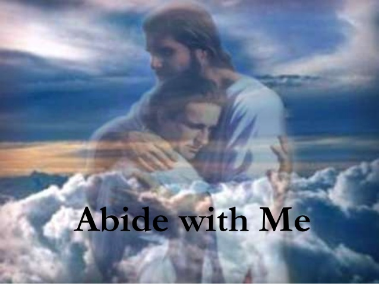

「聽哪千萬聲音雷鳴~ 2000年經典詩歌盛宴」計畫 │ 詩歌時代：第四時期（1790~1850）
詩歌「與我同住」的影響力
 |
| 2012倫敦奧運開幕式的壓軸曲目－與我同住 |
身著一襲寶藍色禮服，尚比亞裔的蘇格蘭歌手 Emeli Sande用哀痛、帶有盼望的嗓音徐緩的唱出基督徒的經典詩歌－「與我同住」（Abide
with Me）。
這裡不是歐洲的大禮拜堂，不是某教會舉辦的敬拜夜，這裡是2012倫敦奧運開幕場地－史特拉福體育場。
長達3個小時開幕節目中，大會將最重要的壓軸時間，交給了一首詩歌，和演繹此詩歌主題－生與死－的感人舞蹈。在優美的旋律和深沈的歌詞中，所有的觀眾都重新思考生命、死亡，和信仰，所有人的眼目也都再拉回到主自己...
賴特（Henry Francis
Lyte, 1793-1847）的詩歌「與我同住」已經深化在英國人的文化裡。1927年起，每一屆英國足總杯決賽，在冠亞軍隊伍較量的前一刻，聚集著上萬觀眾的體育場總會唱起這首詩歌。彷彿，英國人知道，在運動員肉身的活力釋放前，都該重新思考著生與死；在觀眾情緒最酣熱、高漲之前，都得回歸心靈的寧靜安息。
這首詩歌在教會歷史上，不知道幫助了多少神的兒女走完最後的一段路，帶領他們經歷死蔭幽谷；因為那條路太過孤單、絕望、難以獨自忍受。
賴特的生命與詩歌
樂於「與漁民同住」的詩文才子
海風潮溼、寒冷，在賴特口中略帶著鹹味，在寫下人生最後的一首詩歌的那個下午，賴特的腦海閃過一生的畫面剪影...
- 他想起在他幼年就離去，卻愛他的母親，在他剛懂事時就一遍又一遍讀聖經故事給他聽，並教導他用禱告將大小的心事告訴主；
- 他想起父親前赴戰場時的背影，在長年的英法戰爭中音訊全無，留下9歲的他孤零零的活在世上；
- 他想起慈愛的皇家學院校長收留孤苦伶仃的他，他也不辜負校長的好心，在校時連續三年獲最佳英文詩獎，贏得多次獎學金的榮譽；
- 他也想起畢業後，當他終於還清校長的債務之後，31歲的他做了一個一生從不曾後悔的決定－在1824年，和妻子放下一切，自願到英國南部，偏遠、氣候惡劣的布里克瑟姆漁村（Brixham），花費24年服事一群沒有學問、頭腦簡單，看似粗野的漁民，直到他氣力用盡，生命柴火燒成餘燼。
沒有人知道為什麼他做出這個決定。這個詩文才子，一路讀到碩士的資優生，自願放下一切的身段，來到沒有人在乎的小漁村。在每夜漁船靠岸時，他不嫌棄溼漉漉的漁船，渾身臭汗的漁夫，走上一條條船上，趁著漁民整理漁獲時，陪他們聊天、聽他們訴苦、與他們打成一片；向著他們，賴特就成為他們的樣子。他甚至為出海的人寫了一本航海詩歌與禱告輯，讓他們在航行中的百無聊賴時使用，唱頌。
「學會死亡，你就學會活著。」（墨瑞）
1847年9月4日早晨，54歲的賴特肺結核極度嚴重，他知道自己已經一隻腳在墳墓裡了。但他仍然拖著疲軟的身軀，用盡全力，爬上了講台，台下眾人屏息，『人都免不了一死，』他說，『那些曾在生前擁抱過基督之死的人，最能預備好面對身體的死亡。』雙手扶著講台，賴特用顫抖卻堅定的聲音說，『今天我仍然站在這裡，像是從死裡復活一樣，希望你們見到我這個樣子，也能有所警惕，讓你們能預備自己，迎接那個人生終究會來臨的嚴肅時刻，並在那日來到之前，天天經歷、認識、倚靠基督的死。』
 |
| 賴特（Henry Francis Lyte, 1793-1847） |
隔天，賴特就要離開這個讓他一心牽掛的漁村，到南方溫暖的義大利過冬；並且他知道，這次他不會再回來了。
當天，他卻仍像尋常的每一個傍晚，漫步在熟悉的海邊，遠眺西沉的夕陽在暮色中將海面染成火紅，和他殘餘生命彼此輝映；不朽的詩詞緩緩從他深處湧出，他不假思索的，當晚寫下了這首思索生命和死亡的經典詩歌－「與我同住」。
三週後，賴特雖然終究無法抵達溫暖的義大利，病死於異鄉法國，但他卻永遠的安息主懷，安然抵達了那白日永不敗落之處。
詩歌賞析
「與我同住」的典故出自路加福音24章，當2位門徒在回以馬忤斯的途中，正為耶穌的死並自己茫茫前途擔憂時，遇到了耶穌（但他們卻認不出來）陪他們同行，談論祂復活的種種。當他們快到目的地時，耶穌裝著還要前行，「他們卻強留祂說，請你同我們住下罷，因為時候晚了，日頭已經平西了。耶穌就進去，要同他們住下。」（29）
在一個知道死亡就在眼前之人所寫的詩歌裡，我們看不到對生命的徬徨、疑惑、迷惘，詩句中洋溢著安慰、把握，和盼望。用渴求的口吻，在每節（註）的尾句都求主「與他同住」（Abide
with Me）。
對沒有信仰的人...
死亡是對生命最大的否定，最大的諷刺與玩笑。
但，對於有信仰的人...
宇宙中最大的否定就是十字架，因為神藉著牠掃除了一切不屬於祂自己的東西。
宇宙中最大的肯定乃是復活，因為神藉著牠，將一切祂所要的東西帶進新範圍。（倪柝聲）
祂的同住，隱密中的同在，是我們一生的把握與榮耀的盼望。到那日，我們所有在信心中的看見，都要成為眼見；所有的祈求盼望，也都要成為頌讚歡呼。
在《詩歌》本中，由賴特所寫的詩歌有2首：
- 288首－與我同住，夕陽西沈迅速
- 348首－我今撇下一切事物
同行、同在、同住－我主與我的三層經歷
1. 「同行」－外在的；效法榜樣、跟隨步伍
以諾...與神同行三百年。（創世記5:22）
以諾不隨從今世的潮流，而與神同行。
與神同行乃是以祂為我們的中心和一切，行事不照著我們自己的觀念和願望，乃照著祂的啟示和引導，而與祂同作一切事。
http://blog.sina.com.cn/s/blog_4c028ba90100cjwy.html
漫谈圣诗【Abide with Me 求主同住】
【Abide with Me 求主同住】是一首流转甚久的非常著名的歌曲。现在流行的有两种版本，如天使之翼合唱团的专辑【Angel
Voices天使之音】第13曲【Abide with Me 】，和Hayley Westenra 海莉·韦斯顿的专辑【Treasure
珍重】第15曲【Abide with Me
】。听着天使之翼和海莉·韦斯顿天使般的嗓音在咏唱这首歌曲时，那种对命运的无奈和对死亡的从容，直透灵魂，深深震撼着每个人的心灵。
【Abide with Me 】是一位19世纪的英国乡村牧师亨利.萊特(Henry
Francis Lyte,1793-1847)所写的赞美诗。亨利.萊特1793年生于靠近苏格兰的 West Mains 农场, 11岁时举家移居爱尔兰,
后来担任船长的父亲不幸罹难，全家陷入极度困境之中，亨利.萊特通过半工半读完成以优异的成绩完成了大学医学学业，并曾三度获得写诗奖金，等待他的是一片大好前程。但是亨利.萊特却选择了神职，献身于这项清苦的事业，后来志愿来到英国一个名为Brixham的偏僻穷困的渔村，用爱来感化這些粗暴无知的漁民，一待就是25年，长期劳累的工作，清贫的生活和潮湿的海洋气候，使他的身体每况日下并染上了当时无药可治的肺结核，学过医的他也自知将不久于人世。在医生的一再催促下，他在无奈中终于决定遵
照医嘱去意大利休养。启程前一日，54岁的萊特在教堂讲完了最后一堂道，当天傍晚他到海边散步，留恋万分，直到最后一缕阳光消失后才回家。在跳动的烛光前，感到来日不多的萊特在极大的悲痛中，提笔写下了这首感人的伟大圣诗和曲谱，。两个星期后，在赴意大利的途中不幸安眠并安葬于法国南部一个名为Nice的地方。1861年英国一位著名的唱詩班指揮William
Henry
Monk发现了这首感人的圣诗和曲谱，重新为圣诗再谱新曲公开发表，引起了极大的反响，并留存至今（萊特的旧谱很少在被应用）。时至今日，每年还有不少人千里迢迢來到萊特的墓前凭吊以表尊崇。
萊特的圣诗分为8段，原文如下：
Abide with me; fast falls the eventide;
The darkness deepens; Lord with me abide.
When other helpers fail and comforts flee,
Help of the helpless, O abide with me.
Swift to its close ebbs out life’s little day;
Earth’s joys grow dim; its glories pass away;
Change and decay in all around I see;
O Thou who changest not, abide with me.
Not a brief glance I beg, a passing word;
But as Thou dwell’st with Thy disciples, Lord,
Familiar, condescending, patient, free.
Come not to sojourn, but abide with me.
Come not in terrors, as the King of kings,
But kind and good, with healing in Thy wings,
Tears for all woes, a heart for every plea—
Come, Friend of sinners, and thus bide with me.
Thou on my head in early youth didst smile;
And, though rebellious and perverse meanwhile,
Thou hast not left me, oft as I left Thee,
On to the close, O Lord, abide with me.
I need Thy presence every passing hour.
What but Thy grace can foil the tempter’s power?
Who, like Thyself, my guide and stay can be?
Through cloud and sunshine, Lord, abide with me.
I fear no foe, with Thee at hand to bless;
Ills have no weight, and tears no bitterness.
Where is death’s sting? Where, grave, thy victory?
I triumph still, if Thou abide with me.
Hold Thou Thy cross before my closing eyes;
Shine through the gloom and point me to the skies.
Heaven’s morning breaks, and earth’s vain shadows flee;
In life, in death, O Lord, abide with me.
天使之翼合唱团的【Abide with Me 】采用了第一、第二和第七段，海莉·韦斯顿的【Abide with Me
】采用了第一、第二和第八段。这就是前面所说的两个【Abide with Me 】版本。
萊特的圣诗【Abide with Me
】的中文译本有两类，一类是神职人员所译；另一类是文化人所译，著名的是1933年刘廷芳先生的译本。前者的特点是迹近直译接近原作，后者的特点是文字简练雅致如诗，但后者将“abide
with
me”译为“求主与我同居”，现今“同居”一词多指男女同住一室，用在上帝身上则太冒犯不恭。因而笔者冒险尝试，对刘先生的译作稍作几处修改，将两个版本的歌词原文及其中文翻译
一并呈上，仅供有兴趣者参考：
1. 【Abide with Me 求主同住】－天使之翼合唱团
Abide with me; fast falls the eventide
The darkness deepens, Lord with me abide
When other helpers fail and comforts flee,
Help of the helpless, O abide with me
Swift to its close ebbs out life's little day
Earth's joys grow dim, its glories pass away
Change and decay in all around I see
O Thou who changest not, abide with me
I fear no foe, with Thee at hand to bless
Ills have no weight, and tears no bitterness
Where is death's sting? Where, grave, thy victory?
I triumph still, if Thou abide with me
夕阳西沉, 求主与我同住；
黑暗渐深, 求主与我同住；
求助无门, 安慰也无求处，
恳求助人之神，与我同住。
渺小浮生, 飘向生涯尽处；
欢娛好景, 转瞬都成过去；
变化无常, 环境何能留住?
恳求不变之神, 与我同住。
有主降祥, 仇敌何需畏惧?
泪不辛酸, 病痛也无足虑；
坟墓威权, 锋芒今天何处?
我仍得胜, 主若与我同住。
2.【Abide with Me 求主同住】－海莉·韦斯顿
Abide with me; fast falls the eventide;
The darkness deepens; Lord with me abide.
When other helpers fail and comforts flee,
Help of the helpless, O abide with me.
Swift to its close ebbs out life's little day;
Earth's joys grow dim; its glories pass away;
Change and decay in all around I see;
O Thou who changest not, abide with me.
Hold Thou Thy cross before my closing eyes;
Shine through the gloom and point me to the skies.
Heaven's morning breaks, and earth's vain shadows flee;
In life, in death, O Lord, abide with me
In life, in death, O Lord, abide with me
夕阳西沉, 求主与我同住；
黑暗渐深, 求主与我同住；
求助无门, 安慰也无求处，
恳求助人之神，与我同住。
渺小浮生, 飘向生涯尽处；
欢娛好景, 转瞬都成过去；
变化无常, 环境何能留住?
恳求不变之神, 与我同住。
示我十字. 双眸垂闭之时，
照彻昏幽, 指我直上天衢；
阴翳飞逝, 欣看天光破曙，
无论天上人間, 求主与我同住。
徐彬老師
「導言」
有這樣一首傳統讚美詩歌，它在英國具有非常崇高的地位，不但屬於聖詩中的經典作品，而且還成了英國歷史文化重要遺產的一部分，深受全民的喜愛。自1927年起它就一直是每屆英國足總杯總決賽開幕式上的必唱歌曲，甚至還在2012年的倫敦奧運上被選定為開幕式的主題曲。然而這首詩歌的作者在創作此詩時卻已是一位病入膏肓，十天後便去世的人。造成如此驚人反差的詩歌其作者究竟是何許人也？他是在什麼樣的環境和心情下寫下了這首詩歌？為什麼英國廣大民眾會如此喜歡這首詩歌？伴隨著這首詩歌，歷史上曾經有過什麼樣的故事？
1793年6月1日，一個男孩在英國蘇格蘭羅克斯伯格郡被人稱之為“詩人之角”的埃德南一戶軍人家庭裡呱呱降生。該嬰兒是家中出生的第二個男丁，父親給他取名為亨利·弗朗西斯·萊特（Henry Francis Lyte，以下簡稱“萊特”），男孩上面還有一個哥哥叫托馬斯。萊特的父親雖然是一名皇家海軍的上尉，但在家裡卻不是一位稱職的父親。他除了因海軍特點經常不能歸家外，即便到了假期他也是“只對釣魚和打獵更感興趣，而不承擔起丈夫和父親的責任”；因此包括照顧孩子在內的所有家務重擔都落在萊特的母親安娜·瑪麗亞(Anna Maria)身上。幸運的是瑪利亞不但是一名非常善良能幹的母親而且還是一名虔誠的基督徒，因此無論是在生活還是信仰上都給了兩個孩子十分周全的照顧和帶領。
1796年英法兩國戰爭爆發，接下來英國國內又發生了愛爾蘭叛亂。萊特父親所在部隊因此奉命轉移到愛爾蘭西北海岸駐紮。為此母親歷經辛苦帶著孩子離開家鄉前往那裡與父親團聚，然而好景不長，幾年後父親卻移情別戀有了情婦。母親一氣之下帶著新出生不久的幼子喬治離家出走，搬到倫敦去居住。而父親則乾脆趁機把萊特和哥哥托馬斯送到位於愛爾蘭費爾馬赫郡的一所名叫普托拉皇家學校（Portora Royal School）去寄宿讀書，他則縱情享受與情婦的兩人世界。
萊特弟兄所去的這所皇家學校是英國最早的公立學校之一，歷史上曾經培養出眾多的社會名人，學校位置也是處在當地美麗的湖光山色之中，然而萊特在這裡開始的學生時代卻是暗淡無光。先是與他朝夕相處的哥哥因為無法適應學校嚴格的學習生活環境而被迫退學，離他而去；接著他日夜思念的母親和弟弟喬治又在倫敦不幸染病去世，與他天人永別；再下來他的父親帶著情婦去了澤西島，從此杳無音信。這一波波接踵而至的打擊，不但使萊特過早地經歷了人生的坎坷，也給他在學校裡的生存及學業帶來了極大的危機。而那時的他才年僅十歲。
幸運的是就在萊特最軟弱無助的時候中遇上了他人生中的貴人，那就是普托拉學校的校長伯羅斯博士（Dr. Burrowes）。伯羅斯校長十分看重這位少年身上出眾的才華和氣質，更同情他不幸的遭遇，因此在萊特最需要幫助時及時伸出了溫暖的雙手。儘管伯羅斯自己要養五個孩子，但他仍然主動承擔了萊特在學校裡的所有學習和生活費用；不僅如此，每到週末及各種假期他就會把萊特接到自己家裡來與孩子們同住，以致在許多外人眼裡他已儼然成為校長的養子。在伯羅斯校長的慷慨幫助和鼓勵之下，萊特終於按期從該校畢業並如願考入著名的都柏林三一學院。
二、青年才俊
在大學讀書期間萊特很快脫穎而出，展現了他多方面的才華。尤其是在文學方面，他創作的詩歌連續三年獲得了學校的校長詩歌大獎；同時靠著他各學科的優異成績，從入學第二年起就年年獲得學校提供的獎學金。待他如慈父般的伯羅斯校長也繼續在財務上支持他的學業。到了1814年萊特順利學完所有的課程，獲得三一學院頒發的文學學士學位。
作為名牌教會大學的畢業生，萊特很快就在1815年被英國國教的聖公會授予了聖職，並派往韋克斯福德（Wexford）附近的一家教堂擔任副牧師。兩年後他又轉到康沃爾的另一家教堂擔任副牧師。在那裡他認識了一名來自愛爾蘭名叫安妮的姑娘，並與她結為連理。
他們兩人的婚姻在常人看來似乎有些不太“門當戶對”：一方面安妮不但出生於愛爾蘭的一個名望之家，而且還因是獨女而成為家族財產的唯一繼承人；而萊特卻是一名失去母親，又被父親拋棄，幾乎一無所有的窮小子。從這個意義上說萊特屬於常人眼裡所謂的“高攀”。但在另一方面，萊特不但是一名極具才華的天才詩人，還是一個少有的美男子，人們形容他“異常英俊”，“極具個人魅力”，“外出手中經常拿著長笛”， … ；不僅如此，他還是一位興趣廣泛，精通多國語言的學者，曾在當地的一個山洞裡發現了一處遠古人類生活過的遺跡。而安妮不但長相一般，而且年齡還大過亨利七歲。然而在現實生活中他們兩個人婚姻卻非常美滿，兩人不但育有兩個女兒三個兒子，安妮擁有的財力也為萊特能夠在教會安心地服事以及從事他喜歡的詩歌創作提供了充分的保障。
下圖是萊特的家
三、漁村服事
作為牧師一開始萊特其實並沒有在神學裝備和靈命健全上做好應有的準備。他在都柏林三一學院臨畢業時一度還曾經考慮是否要效仿恩師伯羅斯博士那樣繼續去就讀醫學院；從學院畢業後他也只是接受了非常短暫有限的培訓即被賦予聖職前去教堂事奉。用他自己的話來說，“我的使命感在早期那個階段是模糊的。”但他在康奧爾擔任副牧師期間的一段經歷幫助他完成了一次心靈的洗禮和昇華。
William_Jervois
那天他專門去探訪一位名叫威廉·奧古斯都·亨特(William Augustus Le Hunte 1774-1820)的病危牧師。到了牧師家裡，兩人在交談中居然彼此都一時說不出什麼特別可足以安慰的話語。後來他們兩人通過禱告和誦讀保羅書信中的有關教導，認識到過去他們過去“只是從簡單和字面意義上去理解《聖經》，並沒有真正理解保羅話語中的亮光”的教訓，彼此的心門頓時打開，之後萊特也見證了牧師歸入主懷時的安寧和喜樂。
這次的見面和交談開啟了萊特屬靈的眼睛，並改變了他的整個生命：萊特後來回憶道：“這個經歷對我產生了很大影響，讓我開始用一個不同於以前的眼睛去看待生活及各種問題；我開始認真去研究《聖經》，並以不同於我以往的方式去佈道。”
萊特生命的這種改變充分體現在他在德文郡的下布里克瑟姆漁村服事的日子裡。他從1824年來到這裡，一直到他1847年去世，一直都和那裡的漁民們生活在一起，全心全意為他們提供各方面的關懷和服務。一來到下布里克瑟，萊特就加入到當地學校的校務委員會中，並在兩個月後成為委員會的主席。當他了解到漁村的大多數兒童和漁民們沒有任何受正式教育的機會後，他即設法在當地分別為兒童和漁民們建立起各自的主日學學校。平日裡萊特也非常關心這些漁民們，除了常常拜訪他們在岸上的住家外，他還為每艘船的漁民們提供一本《聖經》，甚至還專門為他們編寫了在海上使用的聖詩歌本和禱告手冊。他的這份愛心和付出深深感動了那些漁民，他服事的教會也吸引了越來越多的會眾，甚至一度連教堂都容納不下，不得不加以擴建。
四、生命輓歌
然而在漁村服事期間萊特的身體狀況隨著年歲的增長卻變得越來越衰弱。他一生中的大部分時間都一直受呼吸系統疾病的困擾，不但很早就患有嚴重的哮喘和氣管炎，後來又染上當時難以治癒的肺結核，而英國常年陰暗潮濕的氣候又十分不適合他的身體狀況。幸好靠著妻子安妮的財力，萊特有時可以在嚴酷的冬季來臨之前前往氣候更溫暖乾燥的歐洲去治病和療養。時間一年年的過去，很快到了1847年的9月，一首足以傳世的詩歌注定要在他最後一次離開漁村的前夕誕生了。
這次按醫生的建議萊特准備前往的治病地點是歐洲的意大利。離出發前還有數日他就常在自言自語地絮叨：“在我離開之前，我必須把一切都安排好，….。”接下來是他啟程前的最後一個主日。儘管他清楚的知道自己身體糟糕狀況，但他仍然不顧家人的勸阻，堅持要為教會的主日聖餐做一次證道。
那天萊特選擇的題目是《最後的晚餐》。雖然這個主題是所有教會的牧師們在主持聖餐儀式時所常用的，但那天對萊特來說卻更有特別的含義。這一點在他在佈道快要結束時說得很明白：“親愛的弟兄們，我們人人都要預備人生那個最嚴肅的時間點- 即死亡時刻的來到，而要做好這個準備惟一的方法，就是記念、認識並倚靠我們的救主耶穌，充分認識主為我們死及復活的奧秘，…。”
當日傍晚，儘管已是精疲力盡了，萊特依然堅持走到海邊，向他服事了二十三年的這片土地告別。此時的海面上一輪紅日正在迅速下沉，天空漸漸轉暗。拖著疲憊廋弱身體的萊特那一刻感到特別的孤獨和無助。
他想起了自己的親人。他即將離她們而去，也許就是永別；他後悔因他的虛弱無力前不久連大女兒的婚禮都沒有前去參加…。
他更想起近年來自己服事的聖公會教會所面臨的困境。那是來自因他那位同在西三一學院畢業的學弟達秘所領導的普利茅斯兄弟會這一教派的影響。該教派主張只要奉主的名，人人都可以組織聚會，會眾之間彼此都是兄弟姐妹，並不需要專門的教堂和聖職人員，因而吸引了許多的社會下層百姓，也包括不少原來屬於他服事的教堂會眾，甚至一度面臨詩班成員都全部走空的衝擊。他實在感到困惑，…。
他腦海裡又浮現出他早年去世的母親和弟弟喬治的面孔，以及他和安妮的第一個愛情結晶，出生後不久就夭折的女兒安（Ann）模樣；聯想到如今他也即將面對死神，就像剛才的一輪落日，快速地消失在黑暗之中。
傷感中他又回憶起當年那件難以忘懷的往事，就是二十七年前的那天去拜訪那位垂危的威廉牧師時的情形。記得威廉在即將離世前，口裡反復在說著同一句話：“主啊，求祢與我同住！”（Lord, abide with me）。此時此刻，這句話如同海浪般地反復湧上他的心頭。
他更從威廉的這句話連想到〈路加福音〉24章的那段經文。那是講耶穌的兩個門徒在離開耶路撒冷，去以馬忤斯村的路上遇見被釘十字架死後復活的耶穌的情節。他們一路與主同行卻沒有認出來身旁那人就是耶穌。門徒還興致勃勃地向耶穌談起耶路撒冷幾位婦女看到耶穌死後的身體第三天在墳墓裡消失，天使告訴她們耶穌已經復活了的消息；耶穌聽後則對這倆人從“從摩西和眾先知起，把所有關於自己的經文，都給他們解釋明白了。”兩位門徒聽了還不夠，可是以馬忤斯村到了，於是他們邀請耶穌說：“天晚了，太陽下山了，請與我們同住吧！”祂就進去與他們同住。 ”（新譯本：路24: 27/29）。
在蒼茫的夜色和陣陣的海潮陪伴下，一段段詩句湧上了萊特的心頭。回到家後，一首《與我同住》的詩歌很快就在他的筆下形成了。
幾天後萊特便啟程前往意大利，在旅途中他又再次修改了這首讚美詩，並將其寄給了留在英國的妻子。這成了他生命中所完成的最後一件事。前往此行目的地的意大利幾乎要穿越整個法國，而萊特的身體已經支撐不下去了，終於在尼斯城他倒了下來。他所住旅館的客人中正好有一位牧師，在萊特生命的最後時刻這位牧師一直陪伴著他；他見證了萊特口中最後的遺言是：“平安！歡樂！”（Peace and Joy!) 那一天是1847年的11月20日，萊特還不到54歲。

五、詞曲亮光
萊特的這首詩歌全文有六節，中文翻譯分別如下：
1，與我同住，夕陽迅速西沉；黑暗漸深，求主與我同住；安慰消逝，且無何人能助；無助之助，求祢與我同住。
2，人生短日，轉瞬就已入暮，地樂燈殘，世榮花謝草枯；四境所見，盡是變遷朽腐；祢，不變者，求來與我同住。
3，莫帶威嚴，有如王中之王，只帶慈良，並祢施醫翅膀，淚來洗憂，心來聽我求訴；來吧，罪人之友，如此與我同住。
4，祢的同在，時時我都需要；除祢恩典，何能使魔敗逃；有誰像祢，將我引導扶助；或陰或晴，求祢與我同住。
5，有祢賜福，我就不怕敵兇；病而不苦，流淚也不酸痛；什麼毒鉤！什麼死亡，墳墓！我都勝過，若祢與我同住。
6，若我臨終，願祢在我身邊，照明幽谷，指我仰望祢面；或到祢來，天曉，地影盡無；無論如何，求祢與我同住。

abide-with-me手稿
從詩文看，作者在第一節開篇首先用那日他在海邊所見之“夕陽西沉，黑暗漸深”的特定場景，寓意當時詩人面臨生命即將落幕的現實，並帶出詩人此刻特別孤獨無助的情感；但由此詩人心中又產生了至誠的呼喊和渴望- “求主與我同住！”接下來的各節，詩人則通過思想自己在人生中的各種看見及境遇，包括“人生短日，轉瞬就已入暮”，“地樂燈殘，世榮花謝草枯”，“四境所見，盡是變遷朽腐”，以及“疾病”“魔鬼”和“死神”的威脅等嚴酷事實，來強調詩人“時時需要”這位“不變者”的重要性，以及“主與我同住”對他的人生意義；到了全詩的最後一節，詩人通過對十字架救恩及主永恆應許的感恩和信心來再次彰顯總結詩人臨終前最大的盼望，即“今生在世以及將來在天，主啊，求祢與我同住！ ”（根據英文原文直譯：In life, in death, o Lord, abide with me！）
萊特這首生命落幕前所寫的最後詩歌發表後打動了無數在人生各階段中渴慕得到神的憐憫和安慰的人們，同時在英國文學史和聖詩史上都留下了不朽的烙印。在英國王室專用的西詩敏大教堂的唱詩班南側的走廊上專門為萊特設立了一塊大理石的名人紀念碑，上面刻有萊特的名字和生卒年日以及這首名作的開篇詩句“夕陽快速西沉”。英國十九世紀最著名的抒情詩人阿爾弗雷德·丁尼生(Alfred Tennyson)生前也非常喜歡這首詩歌，稱讚這首《與主同住》充滿了“莊嚴之美”（solemn beauty）。

不過這首詩歌之所以能夠給人留下如此深刻印象的原因，還離不開作曲者賦予它的感人旋律。這位作曲家就是威廉·亨利·蒙克(William Henry Monk)。
William_Henry_Monk
蒙克是英國一名多才多藝的音樂人士。他出生於1823年3月16日，18歲時就成了倫敦市聖彼得教堂的管風琴師；到24歲他已經成為倫敦國王學院的合唱團團長。若干年後他又被斯托克紐靈頓的聖馬蒂亞斯教堂聘為詩班指揮，同時也開始了他自己的聖樂創作階段。之後他又涉足到音樂編輯領域。 1861年他主編的《古今讚美詩》詩集正式出版，其中收錄了他為萊特譜曲的這首《與主同住》。據說他是在參加為編輯這本詩集而舉行的一次會議上發現了萊特這首尚沒有譜曲的詩作，而他本人又剛經歷了小女兒因病去世的悲痛。萊特的詩作頓時在他心中產生了極大的共鳴，憑著聖靈的感動他立即坐到鋼琴旁，只用了十分鐘便為《與主同住》完成了整個配曲。 《古今讚美詩》這本書出版後馬上一銷而空，不久便再版發行，成為英國有史以來最受歡迎的一本聖詩專集。
蒙克創作的曲調抓住了萊特詩句中所彰顯的那種憂鬱中仍有盼望， 沮喪時求安慰，爭戰中添力量，臨終前享安息的那種鮮明特質，採取了舒緩、平穩、沉靜、莊嚴的旋律鋪墊和階進，如實地將萊特在生命中的軟弱和他渴慕神與其同在、同住的迫切願望和他虔誠之至的禱告之情發揮得淋漓盡致，其音符如同一股股清澈的溫泉，緩緩沁入到聽者的靈魂深處，激起人們對所處世界與人生的無盡思考，並進而將人們帶到生命的永恆之主- 神的面前，… 。
六. 餘音迴響
在《與主同住》詩歌在英國的流傳過程中曾經伴隨著這樣一個感人的故事。故事主人翁是第一次世界大戰期間死於德軍之手的女護士伊迪絲·路易莎·卡維爾(Edith Louisa Cavell（1865-1915)。
伊迪絲出生於1865年英國的一個基督徒家庭，父親是一名牧師。 1907年，她因被布魯塞爾的一所護理學校招聘為護士長而來到了比利時。數年後一戰爆發，戰火很快延燒到歐洲各國。 1914年11月布魯塞爾被德軍佔領。此時的伊迪絲出於一個基督徒的良心利用自己工作的診所便利，積極參與了幫助英法受傷士兵，以及部分當地的年輕人逃離德軍抓捕的地下秘密工作，先後掩護協助了近200人成功越境抵達中立國荷蘭而轉去英國。不幸的是她的作為引起了秘密警察的注意，並專門派遣了一個線民冒充一名要求予以協助逃離的法國士兵去診所試探伊利絲；由此導致她在1915年8月3日被捕，並最終被佔領軍當局指控犯有“戰爭叛國罪”而在兩個月後的10月12日清晨被行刑隊處決。
伊迪絲生前非常喜愛這首《與主同在》詩歌。在她將被處決的前夜她一直反覆唱著這首歌直到天明，第二天清晨走上刑場。她的大愛以及犧牲精神感動了每一個英國人，《與主同住》這首詩歌也和伊迪絲一起被深深地銘刻在廣大英國民眾的心中。
接下來我們一起來探討為什麼列屆的英國足總杯決賽以及2008年倫敦奧運會開賽前選唱這首歌的原因。我個人並不贊同某些介紹該詩歌的文章非要把詩歌內容與運動競賽精神直接聯繫在一起的觀點，因為無論是作者的生平還是詩歌的文字，甚至它的旋律都找不到足以支持或相聯繫的依據。事實上它甚至還是英國人在葬禮儀式上經常選唱的詩歌。因此我覺得還是要從當年的歷史中去尋找原因和線索。
1927年4月23日是英格蘭的足總杯第52屆賽事的決賽日，這次進入總決賽的兩支球隊分別是阿森納隊和卡迪夫城隊，其中的後者是足總杯歷史中第一次殺入決賽的非英格蘭球隊，因此吸引了無數人的關注。
決賽的組織方為大賽精心了賽前獻唱的歌曲，因為預先知道喬治五世國王夫婦也會前來觀看決賽，樂隊專門排練了包括威爾士和英格蘭的國歌《父輩的土地》，《天佑女王》等著名歌曲，然而當英國足球協會秘書長弗雷德里克·沃爾爵士徵求徵求已到達現場的喬治五世的意見時，國王提出的選擇是唱《與我同住》，因為這是他的妻子瑪麗王后最喜歡的一首讚美詩。
史料雖然並沒有告訴我們瑪麗王后為什麼特別喜歡這首詩歌的具體原因，但是我們仍然可以從她的某些人生經歷中找到相關的線索。瑪麗的父親是德國的一名公爵，但母親卻是英國喬治三世國王的孫女。因深得當時英國的維多利亞女王的喜愛，瑪麗在1891年12月正式和女王的長子，作為王儲的阿爾伯特維克托王子訂了婚。可沒想到就在訂婚的六週之後，王子因流感轉為肺炎而不幸去世。其後，由女王牽線瑪麗在1893年6月嫁給了給已故王子唯一的弟弟，即後來成為國王的喬治五世。婚後瑪麗和喬治兩人十分相愛，一戰期間兩人攜手共同度過了導致了有數百萬英聯邦軍民傷亡的艱難歲月。好不容易熬到了戰爭結束，可就在戰後的第二個月後他們六個孩子中最小的約翰又因為患呼吸道疾病而去世，年僅13歲。更讓瑪麗時刻擔心受怕的是丈夫喬治五世也一直患有比較嚴重的呼吸系統疾病，…。如果我們就此對比一下詩人萊特的身體狀況和人生經歷，瑪麗王后喜歡這首詩歌的原因似乎已經昭然若揭。
當日的足總杯總決賽，英國的BBC廣播電台在其歷史上首次採用了全程的實況轉播。由此這首本來就深得民眾喜愛的《與主同住》也藉著無線電波傳遍了千家萬戶，並從此成為各屆足總杯決賽前必唱的歌曲而一直傳承下來。到了2012年倫敦奧運會時，它已儼然成為英國向全世界所展示本國歷史文化遺產中的重要一部分。
https://search.ocbf.ca/withlord/
http://www.congsing.org/abide_with_me.html
Abide with Me: Fast Falls the Eventide congsing.org
Henry F. Lyte, 1847
Addressed to God
| Abide with me: fast falls the eventide; | Luke 24:29 |
| the darkness deepens; Lord, with me abide: | |
| when other helpers fail, and comforts flee, | Ps. 69:20 |
| help of the helpless, oh, abide with me. | Ps. 10:14 |
| Swift to its close ebbs out life’s little day; | |
| earth’s joys grow dim, its glories pass away; | James 1:11 |
| change and decay in all around I see; | Rom. 8:21; James 5:2–3 |
| O thou who changest not, abide with me. | Mal. 3:6; James 1:17 |
| I need thy presence every passing hour; | |
| what but thy grace can foil the tempter’s pow’r? | 1 Cor. 10:13; Heb. 4:16 |
| Who like thyself my guide and stay can be? | 1 Sam. 2:2; Matt. 6:13 |
| Through cloud and sunshine, oh, abide with me. | |
| I fear no foe, with thee at hand to bless: | Ps. 118:6 |
| ills have no weight, and tears no bitterness. | |
| Where is death’s sting? where, grave, thy victory? | 1 Cor. 15:55 |
| I triumph still, if thou abide with me. | 2 Cor. 2:14 |
| Hold thou thy cross before my closing eyes; | Gal. 6:14 |
| shine through the gloom, and point me to the skies: | Col. 3:1–2 |
| heav’n’s morning breaks, and earth’s vain shadows flee: | |
| in life, in death, O Lord, abide with me. | Rom. 8:38 |
It is a common practice to measure a man’s faith, not by how quickly he turns to God during difficult times, but by how regularly he turns to God during times of security. There is, no doubt, some value in this well-tried measurement. Henry Lyte’s hymn gives us a communal voice for turning to God during difficult times and then shows us how we are to stay with our face towards the cross, even when it becomes clear to us that the cross has been effectual—as our faith becomes sight.
Lyte begins with the imperative phrase “abide with me,” which will become a refrain to end each stanza. Like a child, who has no way of amplifying the urgency of his petition except to repeat it, so the hymn turns us with repeated pleas to our Father. It is no coincidence that the dangers besetting us are first expressed as “eventide” and then “darkness.” These are things which frighten little children. The darkness here represents demonic abodes (one thinks of the “outer darkness” to which our Lord alludes in Matthew 22:13) or perhaps even diabolical forces (as expressed in John 1:5—“The light shines in the darkness, and the darkness has not overcome it”). These forces are as frightening to us as the boogies are to the little child, but our heavenly Father has as much control over them as earthly fathers do over a light-switch.
The besetting dangers around us become clearer as the hymn progresses, as does our dependency on the Lord. The second stanza suggests that the fear of death is one of the dangers around us. As the day of life goes, so go the joys of this life. And as they grow dark, we can see the transient nature of so much that surrounds us. If the danger presented in the second stanza is the transient nature of this life, then the succor from that danger is God. The danger exposed in the third stanza, however, is spiritual temptation and again God is the succor. However transient this world may be, it is filled with temptations which beset the immortal soul nonetheless. Just as in the second stanza God was our shiftless rock in a world of change, so in the third stanza God is the guide who leads us away from temptation.
The last phrase of the third stanza, “Through cloud and sunshine, oh, abide with me,” may seem digressive. Certainly it does not relate to the topic of the stanza, which is temptation. But this is no digression added in to fill metrical space. In fact, the “cloud” relates back to the first stanza’s imagery of darkness and the second stanza’s imagery of dimness. The “sunshine” will point us forward to the remainder of the hymn, with its focus on victory over oppression and death, and especially to the last stanza’s “heav’n’s morning breaks, and earth’s vain shadows flee.” What at first seems extraneous is really a pivot, for at this point the hymn turns more victorious.
The tone of the hymn may change after the third stanza, but our dependence on the Lord does not. In some ways, the hymn places increased dependence on God even as it becomes more victorious. Notice that neither of the first phrases of the first two stanzas includes a pronoun for God, whereas the first phrases of the final three stanzas all do. The final stanza returns to the imperative of the hymn’s opening line, this time with two concrete petitions even as the hymn moves closer to glory.
The poem is built of stanzas made of four lines of equal length. This may not seem very hopeful as a poetic form, since the best poetic forms have at least one line which is longer or shorter than the others to build metrical suspense or give metrical resolution. The potential problem is overcome, however, through the repeated “abide with me” of the last line of each stanza. Arriving on it, the reader feels some sense of completion, as if a secure and solid old idea has come back to settle the score of all which came before it. This sense of completion is strongest in the first two stanzas which focus mostly on the dangers of this life. When the reader returns to “abide with me” he is aware that the petition (addressed to God) has already been answered before it was asked. If the fourth line functions as a phrase of resolution, then each of the first three lines builds successively up to that resolution, with the third line being the point of highest tension. It is no surprise, therefore, to find the clearest biblical quotation arriving as the third line of the fourth stanza. Likewise, the clearest picture of glory comes in the third line of the fifth stanza.
The hymn-tune EVENTIDE was composed some fourteen years after the poem, obviously with the poem in mind. The tune supports the text’s child-like voice and repeated pleas. The first three phrases of the tune are made of the same rhythm:

After three statements of this rhythm, the singer is surprised to find the last phrase somewhat altered:

The change, essentially swapping the second and third measures, creates a rhythmic emphasis on the final four syllables of the text—“abide with me.”
The repetitive rhythm is assuring and simple. The change in that repetition lends force to the plea. Moreover, it is worth comparing those last three notes of the tune with the first few notes.
The hymn begins with the words “abide with me,” sung on “mi, mi, re, do.” The hymn ends every stanza with the words “abide with me” on “fa, mi, re, do.” The parallelism in the melody complements the parallelism in the text, to tie the opening of the hymn with its ending well.
This is especially poignant as we move from texts about darkness to, in the last verse, texts about light. Even in the light of glory, with earth’s dim shadows fading, we will still beg our Father to abide with us.
The textual repeat at each stanza’s end, along with a tune that forcefully sets this repeated idea, helps us to remember our increasing interest in the cross, even as we experience victory through it.
https://hymnary.org/text/abide_with_me_fast_falls_the_eventide
Notes
Scripture References:
st. 1 = Luke 24:29, Ps. 27:9
st. 2 = James 1:17, Ps. 102:26-27
st. 3 = Rom. 16:20
st. 4 = Ps. 27:1, 1 Cor. 15:55
st. 5 = 2 Pet. 1:19
Henry Francis Lyte (b. Ednam, near Kelso, Rosburghshire, Scotland, 1793; d. Nice, France, 1847) wrote this text in the late summer of 1847; he died in November of that year (various other stories about Lyte's writing of this text do not appear to be reliable). First printed in a leaflet in 1847, the text was published posthumously in Lyte's Remains (1850). Most hymnals, including the Psalter Hymnal, customarily omit three of the original eight stanzas. The Psalter Hymnal also contains other alterations; for example, stanza 4 originally read, "Ills have no weight, and tears no bitterness."
The text was inspired by Luke 24:29, in which the two travelers to Emmaus ask Jesus to "stay with us, for it is nearly evening." But "Abide with Me" is not a hymn for the evening of a day; instead evening is a metaphor for the close of life, a transition from life's "little day" (st. 2) to "Heaven's morning" (st. 5), which Lyte himself was quickly I approaching. The text is a prayer for God's abiding care when friends fail (st. 1), when everything seems to change and decay (st. 2), when the devil attacks (st. 3), when death approaches (st. 4), and when we pass from this life to heaven's glory (st. 5).
Lyte was orphaned at an early age. He decided to pursue a medical career, although he also had an early interest in poetry. At Trinity College, Dublin, Scotland,[sic. Trinity College, Dublin, Ireland] he was awarded a prize for his poems on three different occasions. While at Trinity, he decided to become a minister and in 1815 was ordained in the Church of England. He served a number of parishes, including Lower Brixham, a small fishing village in Devonshire (1823-1847). Lyte wrote a considerable body of poetry, hymns, and psalm paraphrases, which were published in Tales on the Lord's Prayer in Verse (1826), Poems, Chiefly Religious. (1833, 1845, slightly enlarged posthumously as Miscellaneous Poems, 1868), and The Spirit of the Psalms (1834, 1836). Because of ill health Lyte made winter visits to the French Riviera from 1844 until his death there in 1847.
Liturgical Use:
Funerals and memorial services; healing services; Easter evening (given
st. 4); New Year's Eve services; many other occasions.
--Psalter Hymnal Handbook
==============================
Abide with me, fast falls the eventide. H. F. Lyte. [Evening.] The history of this hymn to the date of its first publication, is given in the prefatory Memoir to his Remains by his daughter, Anna Maria Maxwell Hogg, London, Rivington, 1850, pp. ii., iii., as follows:—
"The summer was passing away, and the month of September (that month in which he was once more to quit his native land) arrived, and each day seemed to have a special value as being one day nearer his departure. His family were surprised and almost alarmed at his announcing his intention of preaching once more to his people. His weakness, and the possible danger attending the effort, were urged to prevent it, but in vain. ‘It was better,' as he used often playfully to say, when in comparative health, 'to wear out than to rust out.' He felt that he should be enabled to fulfil his wish, and feared not for the result. His expectation was well founded. He did preach, and amid the breathless attention of his hearers gave them the sermon on the Holy Communion, which is inserted last in this volume [i.e. the Remains], He afterwards assisted at the administration of the Holy Eucharist, and though necessarily much exhausted by the exertion and excitement of this effort, yet his friends had no reason to believe it had been hurtful to him. In the evening of the same day he placed in the hands of a near and dear relative the little hymn, 'Abide with me,' with an air of his own composing, adapted to the words."
A note to the sermon referred to in this extract says, "Preached at Lower Brixham, Sept. 4, 1847." He died at Nice on the 20th of the November following
The text of this hymn, which is usually regarded as the original, is that
contained in his Remains, published in 1850. There are, however,
several readings of the text. These readings are given in:—
1. A facsimile of the original manuscript in the autograph of the author,
published by the Vicar of Lower Brixham, on behalf of the restoration of the
church.
2. A leaflet on which it was first printed at Berryhead in September, 1847.
3. Remains, &c, 1850.
4. Miscellaneous Poems, 1868.
The variations of text are:--
st. i. 1. 2. No. 1. The darkness thickens, Lord, &c.
Nos. 2 and 3. The darkness deepens, Lord, &c.
st. iv. 1. 4. No. 1. Come, Friend of sinners, and then abide, &c.
No. 2. Come, Friend of sinners, and thus abide.
No. 3. Come, Friend of Sinners, and thus 'bide. st. vili. 1. 1. No. 1. Hold then thy cross, &c.
No. 2. Hold then thy cross, &c.
No. 3. Hold there thy cross, &c.
No. 4. Hold Thou thy cross, &c.
In addition to these the hymn has also been published by J. Wright and Co.,
Thomas Street, Bristol, 1863, with Lyte's original music; and it has been
translated into many languages, including Latin renderings in the Guardian (Nov.
1879 and Dec. 1881), Church Times, Memorials of T. G. Godfrey-Faussett (1878), Hymnologia
Christiana Latina, &c.
The important position which this hymn has attained in many lands and
tongues will justify an extract from Mr. Ellerton's note to the same in Church
Hymns (folio edition 1881). In that collection it is given with the
"General Hymns." Mr. Ellerton says:—
"It is sometimes [nearly always] classed among evening hymns, apparently on the ground of the first two lines, and their similarity in sound to two lines in Keble's ‘Sun of my soul.' This is a curious instance of the misapprehension of the true meaning of a hymn by those among whom it is popular; for a very little consideration will suffice to show that there is not throughout the hymn the slightest allusion to the close of the natural day: the words of St. Luke xxiv. 29 are obviously used in a sense wholly metaphorical. It is far better adapted to be sung at funerals, as it was beside the grave of Professor Maurice; but it is almost too intense and personal for ordinary congregational use."
The use of this hymn is very extensive in all English-speaking countries. It is found in almost every collection published in Great Britain, during the past thirty years.
--John Julian, Dictionary of Hymnology (1907)
According to an edition of the British Weekly, in the late summer of 1847, after preaching his final sermon, knowing his time on earth was drawing to a close, Henry Francis Lyte “walked in the valley garden in front of the home, then down to the rocks, where he sat and composed. It was a lovely sunny day and the sun was setting over distant Dartmoor in a blaze of glory. On the left lay Brixham harbor like a pool of molten gold, with its picturesque trawling vessels lying peacefully at anchor. After the sun had set, Lyte returned to his study. His family thought he was resting, but he was putting the finishing touches to his immortal hymn” (Bailey, The Gospel in Hymns, 171). Later that fall, Lyte passed away, but his hymn has indeed endured through the years as a beloved hymn of peace and prayer in the face of change. Theodore L. Cuyler once relayed a story in which a dying woman recited this hymn as she lay in bed during her last hours. He writes, “As I came away from that room, which had been as the vestibule of heaven, I understood how the ‘light of eventide’ could be only a flashing forth of the overwhelming glory that plays for ever around the throne of God” (Sankey, My Life and Sacred Songs, 57). What a beautiful image when we see the light of day ebbing – this light is only a shadow of the light of life that shines forth from Christ.
Text:
This text, written by Henry F. Lyte near the end of his life, was inspired by Luke 24:29, in which the travelers to Emmaus tell Jesus, “stay with us, for it is nearly evening.” Many hymnals have in the past mistakenly placed this hymn in a section of hymns meant to be sung in the evening. However, though the text refers to the darkening hour, “evening” is a metaphor for the close of one’s life, not a reference to the ending of the day. Most modern hymnals omit three of the original eight stanzas.

Tune:
Some sources claim that William H. Monk wrote his tune, EVENTIDE, in just ten minutes at a committee meeting for the 1861 edition of Hymns Ancient and Modern. Lyte’s text had no tune, so Monk sat down at the piano and wrote one. Others claim that he wrote the tune during a time of great sorrow, while watching the sun set.

Paul Westermeyer considers EVENTIDE to be Monk’s most characteristic tune - that is, ‘never vulgar, never extravagant, often distractingly dull,’ and bordering on the sentimental. It can have this tendency, especially when taken too slow. Even though it’s a tune for generally solemn occasions, be sure it doesn’t drag. Use light accompaniment to help keep the tempo moving.
Notes
According to some sources, William H. Monk (PHH 332) wrote EVENTIDE for Lyte's text in ten minutes. As the story goes, Monk was attending a hymnal committee meeting for the 1861 edition of Hymns Ancient and Modern of which he was music editor. Realizing that this text had no tune, Monk sat down at the piano and composed EVENTIDE. The hymn was then published in that edition of Hymns Ancient and Modern. The tune has always been associated with this text.
EVENTIDE is a modest tune, much loved in the Christian church. Though often used for solemn occasions, the tune must not be sung too slowly. Try singing one of the middle stanzas without accompaniment. Organists should keep a firm and steady tempo.
--Psalter Hymnal Handbook
When/Why/How:
This hymn of comfort is often sung at funerals or memorial services, during healing services, Easter vigil services (especially stanza four), or on New Year’s Eve. It’s an acknowledgement that though our lives are always changing, sometimes in joy and sometimes in sorrow, God remains steadfast. It is thus a perfect hymn of response to an assurance of this steadfastness, and would also be a good song with which to end a service.
https://en.wikipedia.org/wiki/Abide_with_Me
Abide with Me (Wikipedia)
| "Abide with Me" | |
|---|---|
| Hymn | |

The hymn set to "Eventide"
|
|
| Written | 1847 |
| Text | by Henry Francis Lyte |
| Based on | Luke 24:29 |
| Meter | 10 10 10 10 |
| Melody | "Eventide" by William Henry Monk |
| Composed | 1861 |
"Abide with Me" is a Christian hymn by Scottish Anglican Henry Francis Lyte. It is most often sung to the tune "Eventide" by William Henry Monk.
History[edit]
The author of the hymn, Henry Francis Lyte, was an Anglican minister. He was a curate in County Wexford from 1815 to 1818. According to a plaque erected in his memory in Taghmon Church, he preached frequently in Killurin Church, about nine miles from there. During that time the rector of Killurin Parish, the Reverend Abraham Swanne, was a lasting influence on Lyte's life and ministry. Later he was vicar of All Saints' Church in Brixham, Devon, England.
For most of his life Lyte suffered from poor health, and he would regularly travel abroad for relief, as was customary at that time.
There is some controversy as to the exact dating of the text to "Abide with Me". An article in The Spectator, 3 Oct. 1925, says that Lyte composed the hymn in 1820 while visiting a dying friend. It was related that Lyte was staying with the Hore family in County Wexford and had visited an old friend, William Augustus Le Hunte, who was dying. As Lyte sat with the dying man, William kept repeating the phrase "abide with me…". After leaving William's bedside, Lyte wrote the hymn and gave a copy of it to Le Hunte's family.
The belief is that when Lyte felt his own end approaching twenty-seven years later at the age of 54, as he developed tuberculosis, he recalled the lines he had written so many years before in County Wexford. The Biblical link for the hymn is Luke 24:29 in which the disciples asked Jesus to abide with them "for it is toward evening and the day is spent". Using his friend's more personal phrasing "Abide with Me", Lyte composed the hymn. His daughter, Anna Maria Maxwell Hogg, recounts the story of how "Abide with Me" came out of that context:
Just weeks later, on 20 November 1847 in Nice, then in the Kingdom of Sardinia, Lyte died. The hymn was sung for the very first time at Lyte's funeral. Special thanksgiving services to mark Lyte's bicentenary were held in Taghmon and Killurin churches.
While he wrote a tune for the hymn, the most usual tune for the hymn is "Eventide" by William Henry Monk.
History of Hymns: "Abide with Me"
"Abide with Me"
Henry Francis Lyte
The United Methodist Hymnal, No. 700
“Abide with me; fast falls the eventide;
The darkness deepens; Lord, with me abide.
When other helpers fail and comforts flee,
Help of the helpless, O abide with me.”
Some have cited Henry Francis Lyte’s poem as the quintessential Victorian
hymn. It appears in virtually every hymn book in the English language.
Lyte was born in Kelso, Scotland, on June 1, 1793 and died in Nice, France,
on Nov. 20, 1847. He was educated at Portora, the Royal School of
Enniskillen in Enniskillen, Ireland, and at Trinity College in Dublin,
Ireland, where he graduated in 1814. During his tenure at Trinity College,
Lyte was awarded the English Prize Poem on three occasions.
After graduating, he intended to study medicine but instead took holy orders
in the Anglican Church in 1815. Lyte served the curacies at Taghmon,
Marazion and Cornwell. His longest appointment was perpetual curate at Lower
Brixham, Devonshire, in 1823, where he served for 24 years.
During Lyte’s lifetime, he published several works that were mainly
religious poetry: Tales
of the Lord’s Prayer in Verse (1826), Poems
Chiefly Religious (1833), The
Spirit of the Psalms (1834), and an edition of Poems
of Henry Vaughan (1846). Most of the hymn texts that
appear in today’s hymnals are taken from the collection The
Spirit of the Psalms.
There is some controversy to the exact dating of the text to “Abide with
Me.” An article in the Spectator, Oct.
3, 1925, says that Lyte composed the hymn in 1820 while visiting a dying
friend.
However, in 1847, Lyte wrote a letter to his daughter Julia, where he
referred to the hymn as “my latest effusion.” There is no clear evidence on
when he actually wrote the hymn. According to Raymond Glover, editor to The
Companion to Hymnal 1982, Lyte probably wrote the hymn in
1820, and recalled the hymn during the illness that led to his death in
1847.
The hymn is based on Luke 24:29, part of a post-Resurrection narrative
telling the story of Emmaus: “But they constrained him, saying, Abide with
us: for it is toward evening, and the day is far spent. And he went in to
tarry with them.”
Hymnologist J.R. Watson notes, “Lyte’s genius takes the quotation and turns
it into a metaphor for human life in all of its brevity. At the same time,
by changing ‘Abide with us’ into ‘Abide with me,’ he deepens the feeling by
making it speak to the individual, in prayer or meditation.”
It is perhaps the personal intensity of the text, the use of the metaphor of
evening and the closing line, “In life, in death, O Lord, abide with me,”
that makes this hymn a favorite at funerals.
Of the original eight stanzas, The
United Methodist Hymnal uses five. The second stanza
reflects much of the Victorian spirit:
“Swift from my grasp ebbs out life’s little day,
Earth’s joys grow dim, its glories pass away,
Change and decay in all around I see;
O thou who changest not, abide with me.”
A focus on death and the corresponding transience of life is characteristic
of Victorian hymns. John Bell, troubadour of Scotland’s Iona Community and a
liturgical reformer, traces some of the complacency of the church over the
years and its inability to change to the theology embedded in the third line
of this stanza: “Change and decay in all around I see.”
Ian Bradley, a leading scholar of Victorian hymns, names his book on this
subject, Abide
with Me: The World of Victorian Hymns. He notes, “John
Bell, the leading contemporary Scottish hymn writer, has pointed to the
damage done to the cause of reform and moving on in the life of churches by
the deadening effect of [this line] from ‘Abide with me.’”
The text to “Abide with me, fast falls the eventide” first appeared in the
famous Hymns
Ancient and Modern (1861), but it may be the hymn tune
EVENTIDE by William Henry Monk, the musical editor of the hymnal, that has
assured its continual use.
Mr. St. Romain is a sacred music student of Dr. Michael Hawn at Perkins School of Theology.
https://www.umcdiscipleship.org/resources/history-of-hymns-abide-with-me
Words: Henry Francis Lyte (b. June 1, 1793; d. Nov. 20,
1847)
Music: Eventide, by William Henry Monk (b. Mar. 16, 1823;
d. Mar. 1, 1889)
Links:
Wordwise Hymns
The Cyber
Hymnal
Note: The original hymn had eight stanzas. Present hymn books tend to use only CH-1 and 2, and CH-6, 7, and 8. The intervening stanzas are perhaps not as singable, but they contain some interesting thoughts. For example, here is CH-3.
Not a brief glance I beg, a passing word;
But as Thou dwell’st with Thy disciples, Lord,
Familiar, condescending, patient, free.
Come not to sojourn, but abide with me.
The other stanzas can be examined on the Cyber Hymnal link, and you can find the touching story behind the hymn on the Wordwise Hymns link.
Without question, this ranks as one of the finest hymns in the English language. In his careful study, published in 1885 (Anglican Hymnology–Being an account of the 325 standard hymns of the highest merit, according to the verdict of the whole Anglican Church), James King puts it in fifth place overall. I see no reason to move it to a lower spot. And William Monk’s beautiful tune is equal to the task of providing a splendid setting for Henry Lyte’s text.
The hymn is often put with the “Evening Hymns” in our hymn books. The opening lines were obviously inspired by the appeal of the couple on the road to Emmaus, who met the risen Christ (though at first they did not recognize Him). When they reached their home, they said to the Lord, “Abide with us, for it is toward evening, and the day is far spent” (Lk. 24:29). However, it’s clear the author didn’t have the close of day in view when he wrote, but the end of life. Sunset is simply used as a metaphor for the ebbing out of “life’s little day” (CH-2).
The abiding presence of the Lord is an assurance given to every believer. “Where two or three are gathered together in My name, I am there in the midst of them” (Matt. 18:20). “Lo, I am with you always, even to the end of the age” (Matt. 28:20). “He Himself has said, ‘I will never leave you nor forsake you’” (Heb. 13:5). Nor will this ever change, even in eternity (I Thess. 4:16-17).
In CH-2 the author also contrasts the immutability of God (to use the theological word) with the constant change and deterioration of things in this world. God declares, “I am the LORD, I do not change” (Mal. 3:6). Yes, He uses different methods, at different times in history. But His nature and character are unchanging, and so is His righteous standard. That’s a truth the Bible emphasizes a number of times (cf. Ps. 90:2; 102:27; Heb. 1:12; 13:8; Jas. 1:17).
All around us things are changing–and the change seems to accelerate, as time goes by. What a comfort to be a child of God, cared for by One who is unchanging.
Swift to its close ebbs out life’s little day;
Earth’s joys grow dim; its glories pass away;
Change and decay in all around I see;
O Thou who changest not, abide with me.
When God is with us, we are able to be victorious over Satan’s temptations. With the hymn writer we say (CH-6):
I need Thy presence every passing hour.
What but Thy grace can foil the tempter’s power?
Even “the valley of the shadow of death” holds no terrors for us, when we’re assured that even there the Lord will company with us. That’s the theme of the final two stanzas (CH-7 and 8):
I fear no foe, with Thee at hand to bless;
Ills have no weight, and tears no bitterness.
Where is death’s sting? Where, grave, thy victory?
I triumph still, if Thou abide with me.
Hold Thou Thy cross before my closing eyes;
Shine through the gloom and point me to the skies.
Heaven’s morning breaks, and earth’s vain shadows flee;
In life, in death, O Lord, abide with me.
Questions:
1) Why is the unchanging nature of God a comfort to believers, and a
terror to the unsaved?
2) What practical help is it to you, today, that the Lord “abides” with you?
Links:
Wordwise Hymns
The Cyber
Hymnal
https://wordwisehymns.com/2011/09/16/abide-with-me/
Abide with me with EVENTIDE
I. Textual History
On 25 August 1847, Henry Francis Lyte (1793–1847) wrote a letter to family friend Eleanora Julia Bolton describing his failing health and his intention of heading south toward warmer climates:
Such is a sketch of my plans. How small a part of them may we be permitted to carry into execution! And yet it is right to form them, while we leave the rest to Him who does for us better than we could for ourselves. O for more of entire dependence on Him! entire confidence in Him! Not, I hope, that I am quite without these, but I want to feel them more a living principle of action. Conformity to the will and image of the Lord is no easy attainment, and it takes much hammering to bend us to it. I send you while on this subject a few lines which may interest you, as my latest effusion.
His “latest effusion” was the hymn “Abide with me,” included in the letter. A portion of the manuscript letter and hymn were reproduced in The Times, 1 Nov. 1947 (Fig. 1), in an article by Lyte’s great-grandson Walter Maxwell-Lyte.[1] Eleanora later married Henry Lyte’s son Farnham in 1851.
Fig. 1. The Times (London), 1 Nov. 1947, p. 6 (excerpt).
Lyte’s daughter, Anna Maria Maxwell Hogg, gave more context for the composition of this hymn in the preface of the Remains of the Late Rev. Henry Francis Lyte (London: Francis & John Rivington, 1850), pp. li–lii:
The summer was passing away, and the month of September (that month in which he was once more to quit his native land) arrived, and each day seemed to have especial value, as being one day nearer his departure, his family were surprised, and almost alarmed, at his announcing his intention of preaching once more to his people. His weakness, and the possible danger attending the effort, were urged to prevent it; but in vain. “It was better,” as he used often playfully to say, when in comparative health, “to wear out than to rust out.” He felt sure he should be enabled to fulfill his wish, and feared not for the result. His expectation was well founded. He did preach, and, amid the breathless attention of his hearers, gave them the Sermon on the Holy Communion, which is inserted last in this volume. He afterwards assisted at the administration of the Holy Eucharist, and though necessarily much exhausted, by the exertion and excitement of this effort, yet his friends had no reason to believe it had been hurtful to him. In the evening of the same day he placed in the hands of a near and dear relative the little hymn, “Abide with me,” with an air of his own composing adapted to the words.
The sermon mentioned here was delivered on 4 September 1847, based on 1 Corinthians 11:16, and was included in the Remains, pp. 281–292. The “near and dear relative” was identified by Walter Maxwell-Lyte to be Henry Lyte’s daughter Anna, who wrote the account.[2] The hymn itself was inspired by Luke 24:29 (“But they constrained him, saying, ‘Abide with us: for it is toward evening, and the day is far spent.’ And he went in to tarry with them.” KJV).
The hymn was printed as a leaflet in September 1847. Lyte died a few weeks later at Nice, France, on 20 November 1847. The text of the hymn was included in Lyte’s Remains (1850 | Fig. 2), in eight stanzas of four lines, without music.
Fig. 2. Remains of the Late Rev. Henry Francis Lyte (London: Francis & John Rivington, 1850).
One of Lyte’s handwritten manuscripts (different from the letter to Eleanora) was printed in facsimile in the front of The Poetical Works of Rev. H.F. Lyte, M.A. (London: Elliot Stock, 1907 | Fig. 3a), and its transcription appeared in that edition on pp. 35–36 (Fig. 3b), again without music. This version differs slightly from the version in Remains, including the second line of the first stanza, “the darkness thickens,” and the first two lines of the last stanza, “Hold Thou Thy cross,” and “Speak through the gloom.”


{kind=link}
{kind=link}
Fig. 3. The Poetical Works of Rev. H.F. Lyte, M.A. (London: Elliot Stock, 1907).
II. Analysis
Literary scholar and hymnologist J.R. Watson has noted how Lyte’s employment of the foundational Scripture passage, Luke 24:29, has layered meanings:
But the reading has to be metaphorical as well as literal. “It is toward evening, and the day is far spent” refers to the actual time, but is also a metaphor for life itself, for the end of the day of life, for the night which comes when no man can work, for the eventide, the time and tide that wait for no one. It is a reminder of the coming of darkness, of human loneliness and helplessness. In this situation, human beings become dependent on God, as a child looks to its mother or father when faced with the coming dark. . . .
The metaphor is made explicit at the beginning of verse 2. . . . Here “eventide” is not just the evening time but the evening tide, ebbing out at the end of life’s little day. It is an appropriate image for one who knew the sea as Lyte did, who lived by it and who was beloved by the fishermen who sailed on it. The sea becomes a potent reminder of the great rhythms of life, of the endless cycle of change, of growth and decay, as a tide comes in, reaches the full, and then ebbs.[3]
Hymnologist Erik Routley perceived the opening stanza as part of the rich interplay in the Bible between darkness and light, as in Psalm 139:11–12 and 1 John 1:5.[4] The repeated plea at the end of every stanza, “abide with me,” recalls Jesus’ discourse in John 15, in which he describes a two-way relationship, “If you abide in me, and my words abide in you, ask whatever you wish, and it will be done for you.” The second stanza draws attention to the fleeting nature of life, as in Job 14:1–2 (“Man who is born of a woman is few of days and full of trouble. He comes out like a flower and withers; he flees like a shadow and continues not, ESV”).
In the third stanza, the author asks the Lord not simply to sojourn, to make a passing stay, but to abide, to tarry; or as literary scholar Anthony Esolen put it, “He longs for Christ the friend, who will not leave him alone in the wayside inn, awaiting death.”[5] The fourth stanza petitions the Saviour not to return in terror, as perhaps in Revelation 19:11–16, but to come with the healing wings as described in Malachi 4:2.
The fifth stanza speaks of God’s faithfulness in the midst of a person’s rebelliousness in youth, and so like the psalmist pleaded, “Remember not the sins of my youth or my transgressions; according to your steadfast love remember me, for the sake of your goodness, O Lord!” (25:7, ESV). In the sixth, the writer asks the all-important question: who else could fill this role of protector and guide? 1 Corinthians 10:13 speaks of the one who will not let us be tempted beyond our ability. Isaiah 58:11 says “The Lord will guide you continually and satisfy your desire in scorched places and make your bones strong” (ESV).
The seventh stanza, when the author boasts “I fear no foe,” he can do so because of statements like Hebrews 13:6 (“The Lord is my helper; I will not fear; what can man do to me?”) or Romans 8:31 (“If God is for us, who can be against us”). How can have tears have no bitterness? Because we do not grieve like those who have no hope (1 Thess. 4:13; see also 2 Cor. 4:16–18). The third line of that stanza (“Where is death’s sting?”) is a direct reference to 1 Corinthians 15:55.
Finally, the eighth stanza looks upward. Regarding the first line, Frank Colquhoun clarified, “When Lyte—a convinced evangelical churchman—wrote ‘Hold thou thy cross before my closing eyes,’ he was not thinking of a crucifix being held before him on his deathbed. He was asking for a vision of the crucified Saviour whose blood had atoned for his sins.”[6] Speaking more broadly, Erik Routley asserted:
So many hymns mention heaven in their last verses, and are wrongly despised for so doing. This one goes further. It looks death itself in the face. This is its most triumphant verse, its healthiest and most down-to-earth and most realistic verse: for the man who has never faced the enigma of death has never faced anything.[7]
III. Tunes
1. Henry Francis Lyte
Lyte’s text and tune were published together as sheet music in 1863 (Bristol: John Wright & Co.). This edition seems to be lost, but the tune was reprinted in The Musical Times in February 1908 (Fig. 4).
Fig. 4. The Musical Times, vol. 49, no. 780 (1 Feb. 1908), p. 99.
2. EVENTIDE
The tune most commonly used in modern collections is EVENTIDE by William Henry Monk (1823–1889), written for this text for the first edition of Hymns Ancient & Modern (1861 | Fig. 5).
Fig. 5. Hymns Ancient & Modern (London: Novello, 1861).
There are two somewhat contradictory stories behind the composition of this tune. One, tracing as early as 1889, the year of Monk’s death, says:
He told a friend that when he (Dr. Monk) and the late Sir Henry Baker were once going out, they suddenly remembered that there was no tune for hymn 27, “Abide with me,” and that he sat down, and, undisturbed by the noise of a piano lesson which was then going on, wrote that excellent and popular tune in ten minutes.[8]
The number 27 is in reference to the 1875 edition of Hymns Ancient & Modern. Methodist scholar James T. Lightwood had corresponded with Monk’s widow, Annie Maria Monk, who supplied this brief story behind the tune:
The tune was written at a time of great sorrow—when together we watched, as we did daily, the glories of the setting sun. As the last golden ray faded, he took up some paper and pencilled that tune, which has gone all over the world.[9]
Wesley Milgate suggested perhaps Baker had met Monk at his home, as he sometimes did, and the remnants of that conversation drove Monk to compose the tune later in his wife’s presence,[10] but that conflation of stories would not explain the detail about being “undisturbed by the noise of a piano lesson,” unless Monk wrote the tune after the piano lesson when he was no longer disturbed. Alas, the full truth might never be known.
Hymn scholar Raymond Glover, in addressing the occasional criticism of sentimentality behind the tune, said:
The tune, perhaps the composer’s most characteristic, suffers ridicule more because of a slow, maudlin performance practice than from its qualities as a very simple, four-part hymn tune. A moving tempo with a feeling of two beats in a measure is to be encouraged.[11]
by CHRIS FENNER
for Hymnology Archive
18 July 2018
rev. 13 August 2020
Footnotes:
-
Walter Maxwell-Lyte, “A famous hymn: New evidence on date of ‘Abide with me,’” The Times (1 Nov. 1947), p. 6; a portion of the letter had also been printed in Lyte’s Remains (1850), pp. cvii–cviii: Archive.org
-
Walter Maxwell-Lyte, “A famous hymn: New evidence on date of ‘Abide with me,’” The Times (1 Nov. 1947), p. 5.
-
J.R. Watson, The English Hymn (1997), pp. 351–352.
-
Erik Routley, “Abide with me,” Hymns and the Faith (1955), p. 170.
-
Anthony Esolen, Real Music: A Guide to the Timeless Hymns of the Church (Charlotte, NC: TAN Books, 2016), p. 231.
-
Frank Colquhoun, “Abide with me,” Hymns that Live (1980), p. 169.
-
Erik Routley, “Abide with me,” Hymns and the Faith (1955), p. 172.
-
R.E. Welsh & F.G. Edwards, Romance of Psalter and Hymnal (NY: James Pott & Co., 1889), p. 314: Archive.org
-
James T. Lightwood, “EVENTIDE,” The Music of the Methodist Hymn Book (London: Epworth Press, 1935), p. 496.
-
Wesley Milgate, Songs of the People of God (1982), p. 184.
-
Raymond Glover, “EVENTIDE,” Companion to the Hymnal 1982, vol. 3B (1994), p. 1215.
Related Resources:
Remains of the Late Rev. Henry Francis Lyte (London: Francis & John Rivington, 1850), pp. li–lii: Archive.org
John Julian, “Abide with me; fast falls the eventide,” A Dictionary of Hymnology (London, 1892), p. 7: Google Books
Louis Benson, “Abide with me; fast falls the eventide,” Studies of Familiar Hymns (Philadelphia: Westminster Press, 1903), pp. 169–178: Archive.org
“Church and Organ Music: Abide with Me,” The Musical Times, vol. 49, no. 780 (1 Feb. 1908), p. 99.
Walter Maxwell-Lyte, “A famous hymn: New evidence on date of ‘Abide with me,’” The Times (1 Nov. 1947), pp. 5–6.
Erik Routley, “Abide with me,” Hymns and the Faith (London: J. Murray, 1955), pp. 169–173.
Frank Colquhoun, “Abide with me,” Hymns that Live (Downers Grove, IL: InterVarsity Press, 1980), pp. 163–170.
Fred L. Precht, “Abide with me,” Lutheran Worship Hymnal Companion (St. Louis: Concordia, 1992), pp. 500–501.
Raymond Glover, “EVENTIDE,” Companion to the Hymnal 1982, vol. 3B (NY: Church Hymnal Corp., 1994), pp. 1214–1215.
J.R. Watson, The English Hymn (Oxford: University Press, 1997), pp. 350–354.
J.R. Watson, “Abide with me; fast falls the eventide,” An Annotated Anthology of Hymns (Oxford: University Press, 2002), pp. 273–275.
Samuel J. Rogal, Abide with Me, Fast Fall the Eventide (1847): A Sung Prayer of the Christian Tradition (Edwin Mellen, 2010): Amazon
Robert Cottrill, “Abide with me,” Wordwise Hymns (16 Sept. 2011): https://wordwisehymns.com/2011/09/16/abide-with-me/
Anthony Esolen, Real Music: A Guide to the Timeless Hymns of the Church (Charlotte, NC: TAN Books, 2016), pp. 230–233.
Carl P. Daw Jr., “Abide with me,” Glory to God: A Companion (Louisville: Westminster John Knox, 2016), pp. 797–798.
Rajini Vaidyanathan, “Beating Retreat: British hymn ‘Abide with Me’ causing a stir in India,” BBC News (29 Jan. 2022): https://www.bbc.com/news/world-asia-india-60123219
Leon Litvack, “Abide with me; fast falls the eventide,” Canterbury
Dictionary of Hymnology:
http://www.hymnology.co.uk/a/abide-with-me-fast-falls-the-eventide
“Abide with me; fast falls the eventide,” Hymnary.org:
https://hymnary.org/text/abide_with_me_fast_falls_the_eventide
“Abide with me,” with tune by Justin Smith, Indelible Grace Hymn Book:
http://hymnbook.igracemusic.com/hymns/abide-with-me